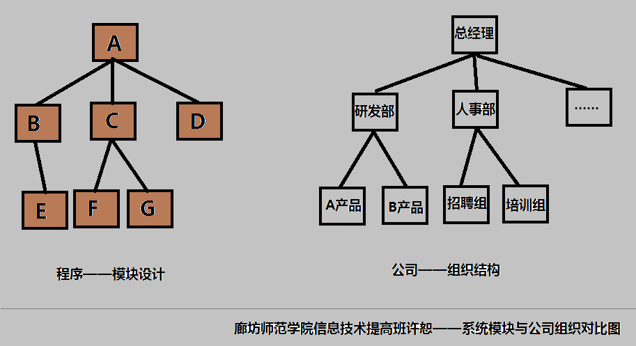

在软件结构的设计阶段有一种对模块的指导思想是“高内聚，低耦合”，仅仅是这样的一种表达很难让我们看到什么，今天我看视频的时候，突然想到了企业管理与这篇的关系，感觉很有意思，再次与大家分享！
一个完整的信息系统，必不可少有管理的成分，管理作为一种思想类的存在，一直对系统有着指导的作用，管理系统，在这里看来就可以看做是管理公司！
做公司，前期的站略规划，可以看做我们的需求分析，中期的职能分配，看作是系统的结构设计，后期的运作管理，看作是系统的实现和维护！但就中期的职能分配来看，耦合与内聚的关系就是，各个部门的关系！

高内聚，就是做职能规划是，让部门专业化，部门内部要责任明确，责任明确的方法是功能集中，恰恰迎合了高内聚要产生的效果！
低耦合，就是关系明确，让每一个部门有其辖属！并让这种直接的责任关系越明确越好，企业中的事务不能同时又4,5个人有权利干预，也不可以一件事务同时动用4,5个部门，这是一种平衡！
这不是巧合，而是种必然，信息时代的到来，使人们意识到信息的资源性，及其资源本身的重要性，我们用淘宝购物，在线申请服务，买卖双方也许有频繁的业务往来，有时在路上相见却不相识！
信息管理系统，本身就带有很浓厚的商务色彩，他是一种高度有效的公司，它可以24小时不间断服务，它可以在你下达命令的几微秒内处理完所有的信息！但是它是人设计的，风险是必然的，但是它的特性导致风险评估变得很困难！
系统与公司有着千丝万缕的关系，如今的公司已经与以往的公司有着巨大的差异！如何发展我们也只能展望！
但是，公司与系统的结合到今天看是必然！